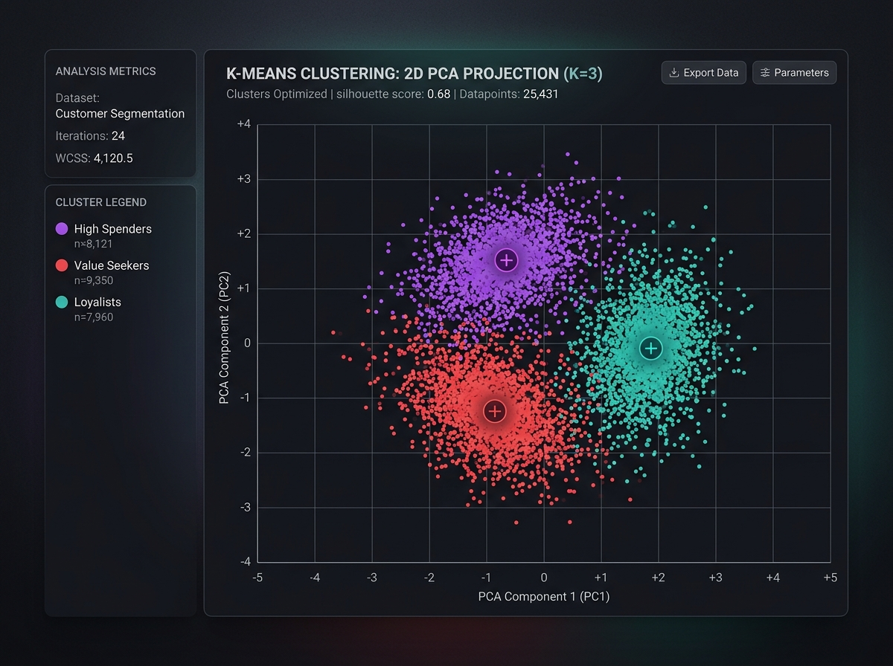
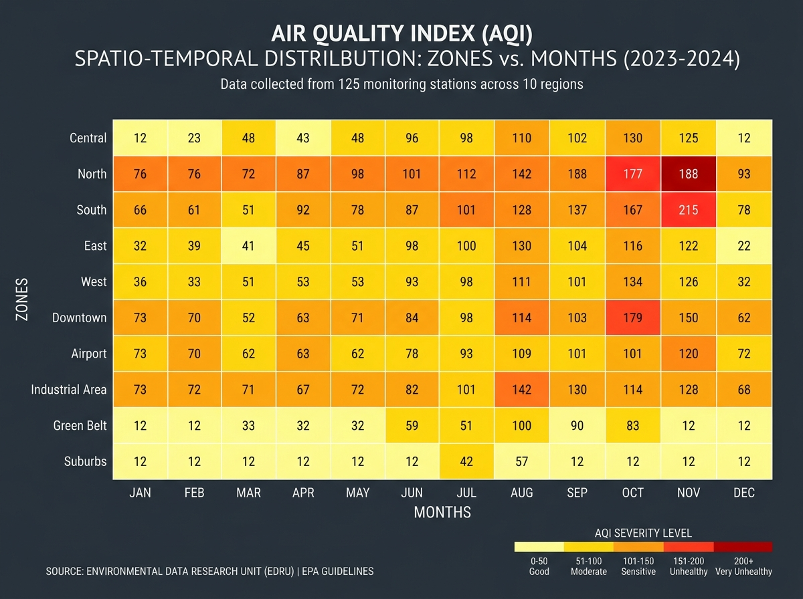
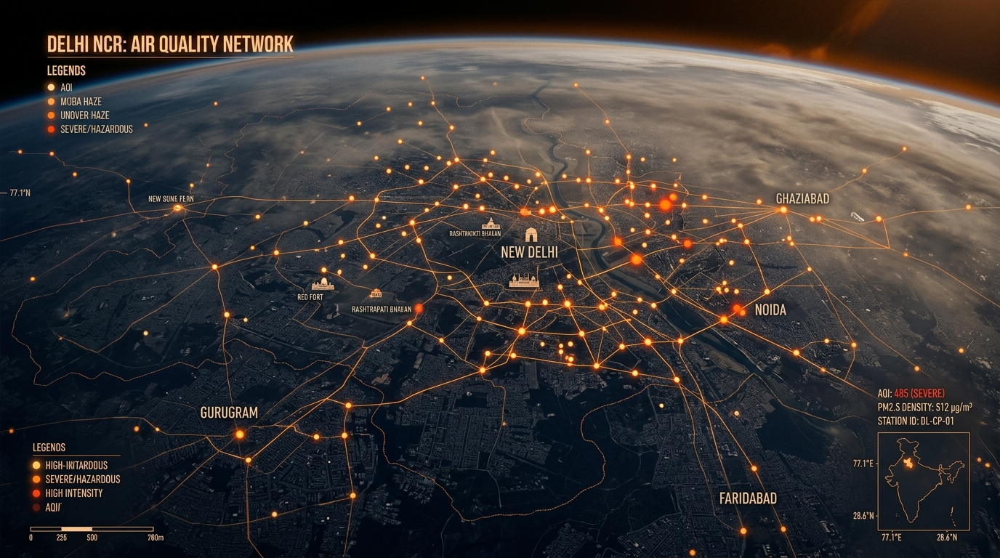

Analysis Outputs
Generated Research Visualizations


Cluster × Month AQI Heatmap

Pollutant Fingerprint Radar Chart

Elbow + Silhouette Optimization

Segmenting Delhi NCR's 18 CAAQMS monitoring stations into behaviour-defined pollution zones by coupling CPCB air quality data with IMD meteorological observations — validated against GRAP episode severity records (2021–2024).
A single city-wide AQI fails to capture the vast spatial heterogeneity of 55,000 km² of NCR with 18+ monitoring stations, each telling a completely different pollution story.
Industrial Anand Vihar vs. residential Dwarka differ by 200+ AQI units on the same day — yet face identical GRAP restrictions.
Wind speed below 1 m/s + temperature inversion amplifies PM2.5 by 2.3–3.8× in winter months. Existing forecasts ignore this synergy.
GRAP's effectiveness is <40%. Proactive zone-based early warnings could trigger targeted action 24–48 hrs before episodes escalate.
5-stage pipeline, K-Means equations, feature engineering, PCA projection
→Cluster profiles, radar fingerprints, PCA charts, heatmaps, analysis charts
→Historical episode matching, Stage I–IV correspondence, quality metrics
→Interactive spatial view of 18 station cluster assignments across NCR
→Project details, author, registration info, tech stack, dataset sources
→Complete State-of-the-Art literature review and academic report overview
→180 station-month vectors · Dominant Season: Monsoon
36 station-month vectors · Dominant Season: Winter

